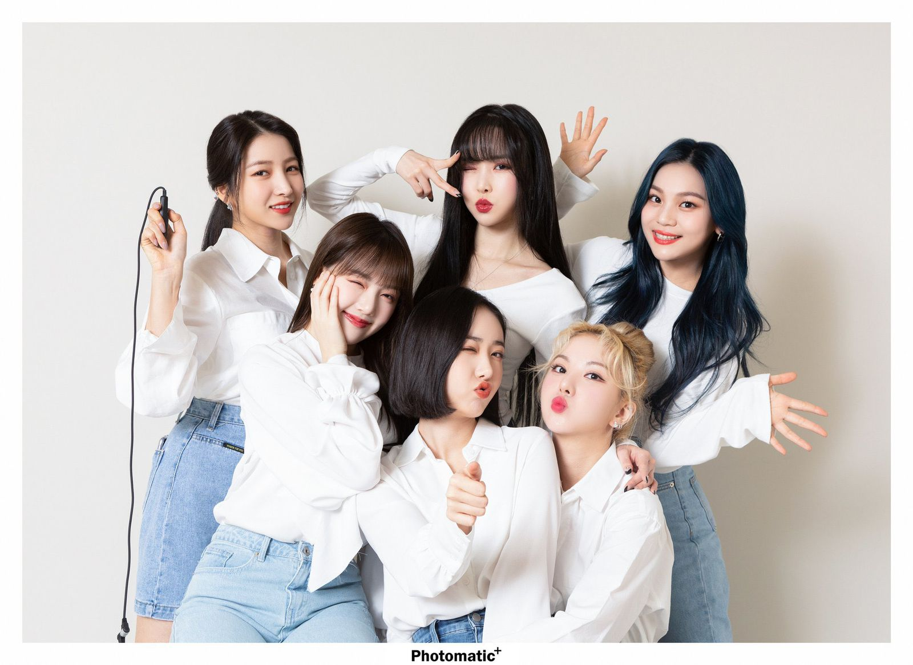
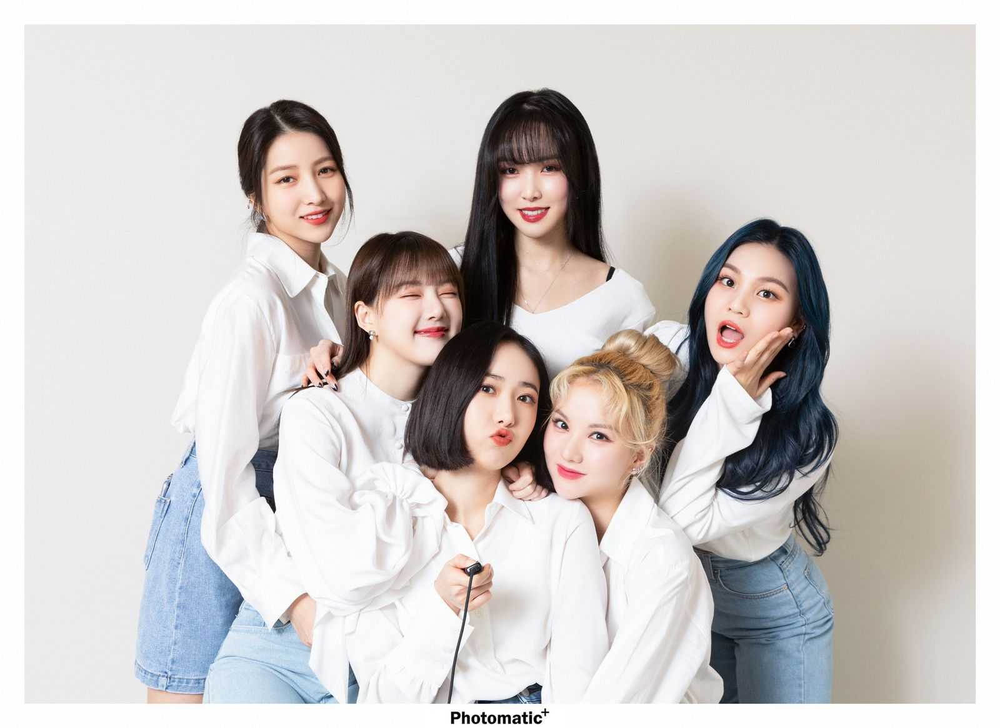
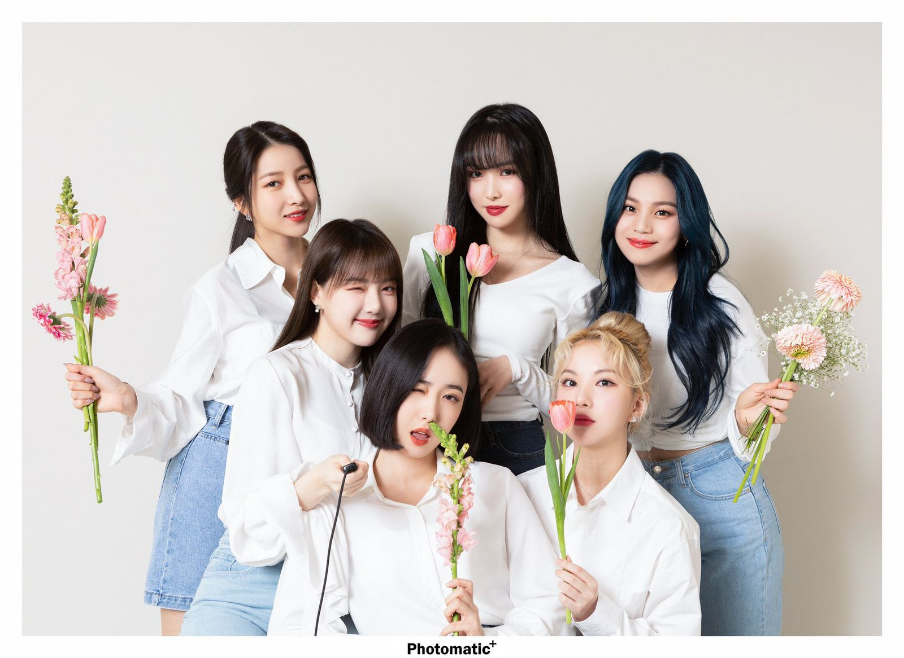
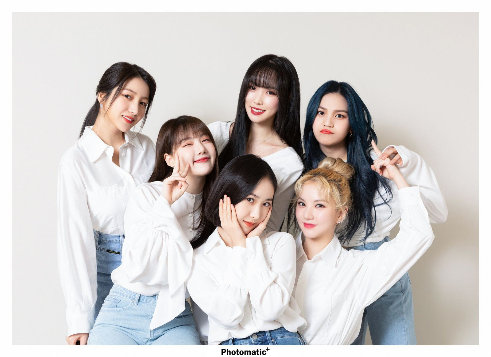
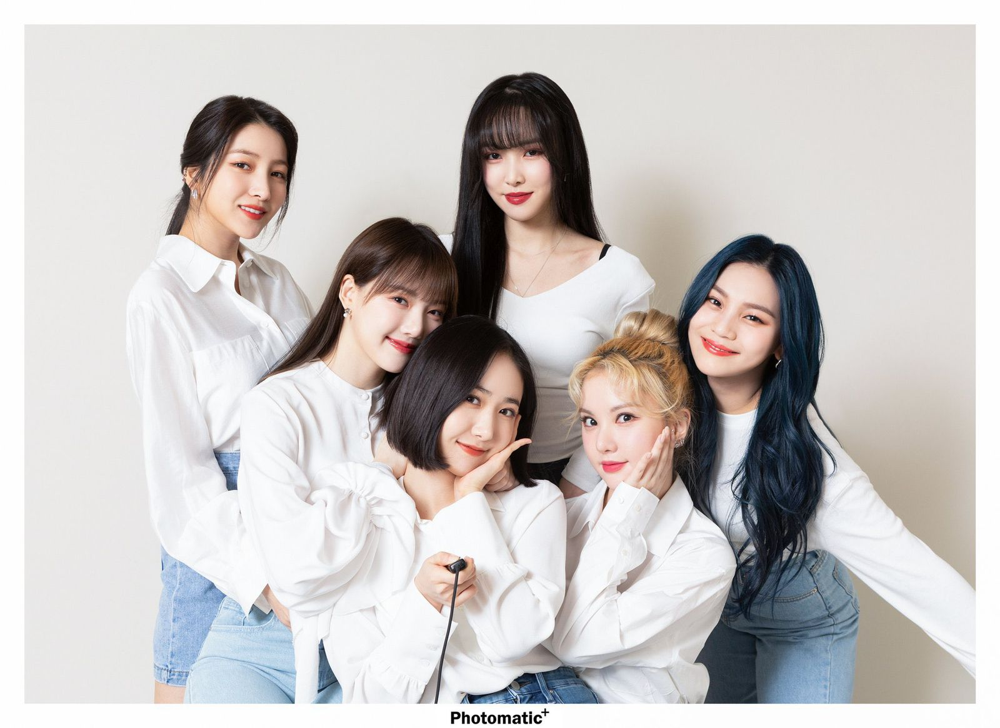

Hello, we are
GFRIEND (여자친구) was a girl group consisting of 6 members: Sowon, Yerin, Eunha, Yuju, SinB, and Umji. The group debuted on January 16, 2015 with the EP “Season of Glass“, under Source Music which became a subsidiary company of Big Hit Entertainment (now known as HYBE Labels) in July 2019..
GFriend (여자친구) was a South Korean girl group formed by Source Music in 2015.The group consisted of six members: Sowon, Yerin, Eunha, Yuju, SinB, and Umji. They debuted with the extended play (EP) Season of Glass on January 15, 2015 and won several female rookie awards, garnering momentum early on despite being from a small company. GFriend continued their commercial success the next year with their third EP, Snowflake, whose lead single "Rough" won first place on numerous music shows. They released their first studio album, LOL, in 2016 as well. In 2017, GFriend returned with their fourth EP, The Awakening, for which pre-orders exceeded 100,000 copies.The same year, the group released their fifth EP, Parallel, which was re-issued one month later under the title Rainbow.
In 2018, GFriend released their sixth EP, Time for the Moon Night, and the special EP Sunny Summer. They also made their official Japanese debut with the compilation album GFriend 1st Best, held their first concert, and embarked on their first Asian tour. In 2019, GFriend released their second studio album, Time For Us, and their seventh EP, Fever Season. The group's final releases were part of the "回" series in 2020, which included two EPs and their third studio album. That year, GFriend became the first-ever girl group to be interviewed for the Grammy Mini Masterclass. They disbanded on May 22, 2021, after all members left Source Music upon the conclusion of their contracts. Eunha, SinB, and Umji later formed the group Viviz in 2022, after signing with BPM Entertainment.